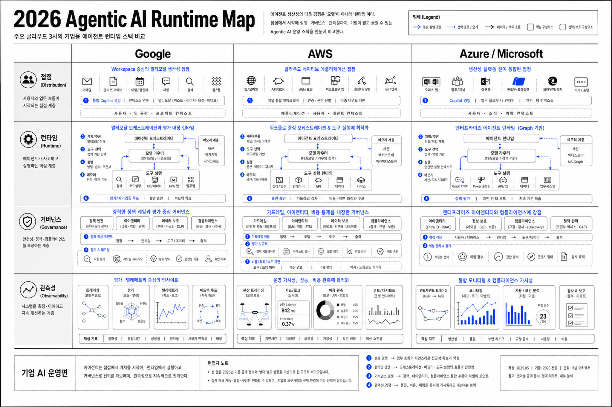
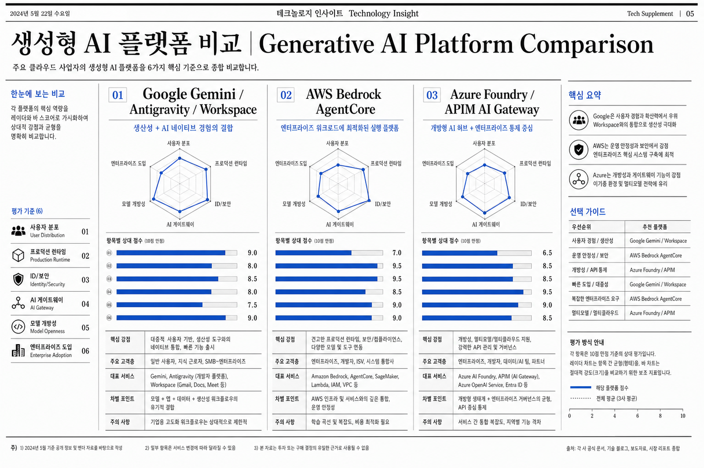
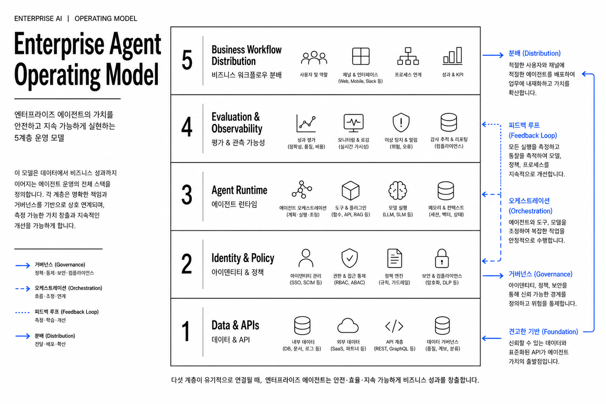

Google I/O 2026은 “모델 발표”가 아니라 에이전트 운영체계 전쟁의 신호탄이다
Gemini 3.5, Gemini Omni, Antigravity 2.0, Managed Agents, Workspace AI, Search Agents는 각각의 제품 발표처럼 보이지만 기업 입장에서는 하나의 메시지로 읽힌다. 클라우드 사업자들의 다음 전장은 모델 성능이 아니라 에이전트 런타임, 데이터 접근, 권한, 관측성, 비용 통제, 업무 배포면이다.

WHY IT MATTERS
최근 기사·블로그가 공통으로 강조한 변화
Reuters, Engadget, Cybernews, VentureBeat, MarkTechPost 등 최근 보도는 표현은 다르지만 같은 방향을 가리킨다. Google은 I/O 2026에서 소비자·개발자·기업을 동시에 겨냥했고, 특히 저비용/고속 모델과 에이전트형 개발·업무 경험을 전면에 내세웠다.
모델 성능 경쟁 → 에이전트 실행 경쟁
Gemini 3.5 Flash의 메시지는 단순 지능 향상이 아니라, 장기 작업·코딩·도구 호출·비용 효율을 모두 만족하는 “실행 모델”이다.
AI 앱 → AI 작업자
Antigravity 2.0과 Managed Agents는 개발자가 AI에게 답을 받는 단계를 넘어, 여러 하위 에이전트가 병렬로 프로젝트를 수행하는 구조를 제시한다.
검색·메일·문서·브라우저가 업무 런타임화
Search Agents, Workspace AI, Gemini Spark는 사용자의 개인·업무 맥락 위에서 백그라운드로 감시·분석·실행하는 에이전트 표면을 만든다.
GOOGLE I/O 2026 READOUT
Google의 방향성: “Gemini everywhere”에서 “Agents everywhere”로
핵심은 발표 항목의 수가 아니라 결합 방식이다. 모델, 개발자 도구, Workspace, Search, Android/XR가 같은 방향으로 움직이면 Google은 별도 AI 포털이 아니라 사용자의 실제 업무·생활 접점 안에서 에이전트를 실행할 수 있다.
장기 에이전트·코딩·비용 효율을 겨냥한 주력 실행 모델.
텍스트·이미지·오디오·비디오 입력을 결합해 우선 비디오 출력부터 지원하는 멀티모달 생성 축.
데스크톱 앱, CLI, SDK, subagents, hooks, async/scheduled task로 개발 업무를 멀티 에이전트화.
Hosted harness, Linux sandbox, 파일/코드 실행, 웹 브라우징, Markdown 기반 instruction/skill.
AI Inbox, Docs Live, Gemini Spark, Search Agents, Android XR로 사용자 접점을 에이전트 표면으로 전환.
Google의 가장 큰 무기는 개별 클라우드 기능이 아니라 검색·브라우저·메일·문서·모바일·유튜브까지 이어지는 사용자의 실제 업무/생활 접점이다.
기업 전략 관점 해석
COMPETITIVE ANALYSIS
AWS·Azure와 비교하면 Google의 강점과 약점이 더 선명해진다
FIVE INSIGHTS
기업 입장에서 도출되는 5가지 시사점
에이전트 도입의 기준은 “모델 벤치마크”에서 “운영 제어면”으로 바뀐다
Google은 Managed Agents, AWS는 AgentCore, Azure는 Foundry Agent Service/APIM AI Gateway를 통해 모두 같은 문제를 겨냥한다. 기업은 앞으로 모델 정확도만 비교하면 안 된다. 런타임 격리, 권한 위임, 도구 호출 로그, 평가·회귀 테스트, 네트워크 격리, 비용 한도까지 묶어 평가해야 한다.
Google의 경쟁력은 “AI가 일어나는 장소”를 장악하는 데 있다
AWS가 인프라 운영, Azure가 M365 기업 배포면에 강하다면 Google은 Search, Gmail, Docs, YouTube, Android, Chrome, XR 등 사용자 행동의 시작점을 갖고 있다. Search Agents와 Workspace AI가 성숙하면, 기업 사용자는 별도 AI 포털보다 기존 업무 접점에서 에이전트를 호출하게 된다.
AWS는 “에이전트용 클라우드 네이티브 런타임”에서 가장 명확한 포지션을 잡고 있다
AgentCore는 Runtime, Memory, Identity, Gateway, Browser, Code Interpreter, Observability를 분리 가능한 서비스로 제공한다. 2026년 릴리스 노트의 BYO filesystem, Agent Performance Loop, payments preview는 에이전트가 실제 파일·평가·결제·업무 실행으로 확장되는 방향을 보여준다.
Azure는 “기업 내부 유통망”과 “정책 게이트웨이”가 강점이다
Foundry Agent Service는 prompt, workflow, hosted agent를 모두 포괄하고 Teams, Microsoft 365 Copilot, Entra Agent Registry로 배포할 수 있다. APIM AI Gateway는 OpenAI/Anthropic 호환 모델, Amazon Bedrock 같은 외부 백엔드, MCP 서버, A2A agent API를 관리 대상으로 포함한다.
멀티클라우드 AI 전략은 “모델 멀티벤더”가 아니라 “에이전트 통제 표준화”가 되어야 한다
MCP와 A2A가 확산되면 도구 연결은 쉬워지지만, 동시에 보안 경계도 흐려진다. 기업은 Google/AWS/Azure 중 하나를 고르는 문제를 넘어 공통 agent registry, tool contract, identity delegation, audit schema, evaluation pipeline을 표준화해야 한다.

ENTERPRISE PLAYBOOK
기업이 지금 점검해야 할 질문
우리 조직의 에이전트는 사람 계정 권한을 그대로 쓰는가, 별도 identity와 위임 토큰을 쓰는가?
도구 호출, 데이터 접근, 파일 생성, 외부 전송, 결제 같은 action에 승인·감사 기준이 있는가?
PoC 평가가 데모 품질에 머무는가, production trace 기반 회귀 테스트·사용자 시뮬레이션으로 이어지는가?
AI Gateway가 모델 API뿐 아니라 MCP 서버, A2A API, 내부 REST API까지 정책적으로 관리하는가?
Google Workspace, Microsoft 365, AWS workloads 중 어디가 실제 업무 에이전트의 1차 배포면인가?
SOURCES
주요 참고 출처
- Google Blog — 100 things we announced at I/O 2026, Gemini 3.5, Gemini Omni, Antigravity, Managed Agents, Workspace, Android XR.
- Google Cloud Blog Korea — Innovations from Google I/O 26 on Google Cloud.
- AWS News Blog / AWS ML Blog / Bedrock AgentCore docs — AgentCore preview, GA, 2026 release notes.
- Microsoft Learn — Microsoft Foundry Agent Service, Azure API Management AI gateway capabilities.
- Google News RSS discovery — Reuters, Engadget, Cybernews, VentureBeat, MarkTechPost 등 최근 기사 헤드라인.
- 내부 GBrain/LLM Wiki — Google I/O 2026 관련 GCP Blog 수집본, Gmail/AlphaSignal 수집본.
주의: X 라이브 검색은 현재 xurl 설치/인증 및 x.com 로그인 게이트 문제로 직접 검증하지 못했다. 본문은 공식 출처를 사실 근거로 삼고, 소셜 반응은 내부 수집 뉴스레터 기반 간접 신호로만 해석했다.